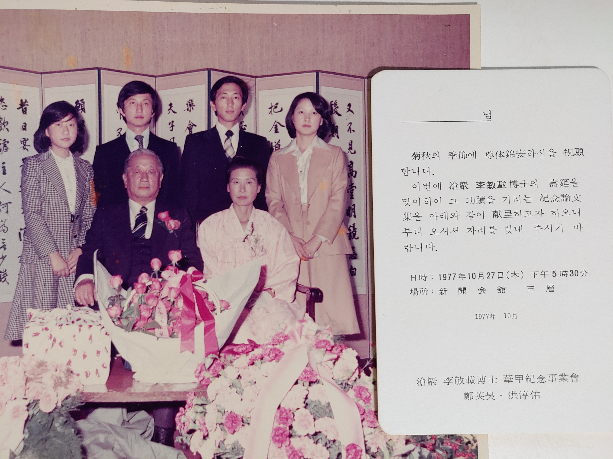
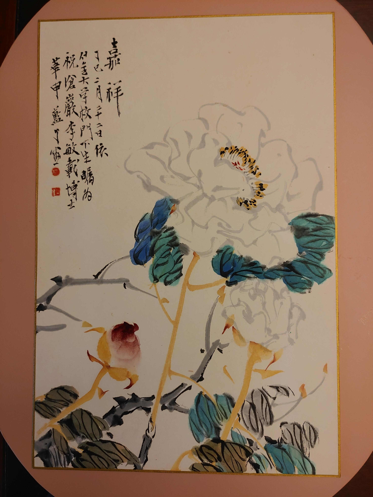
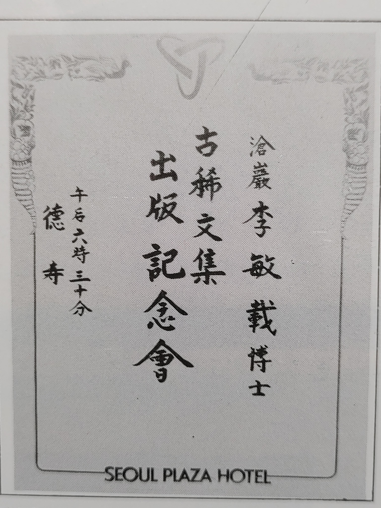
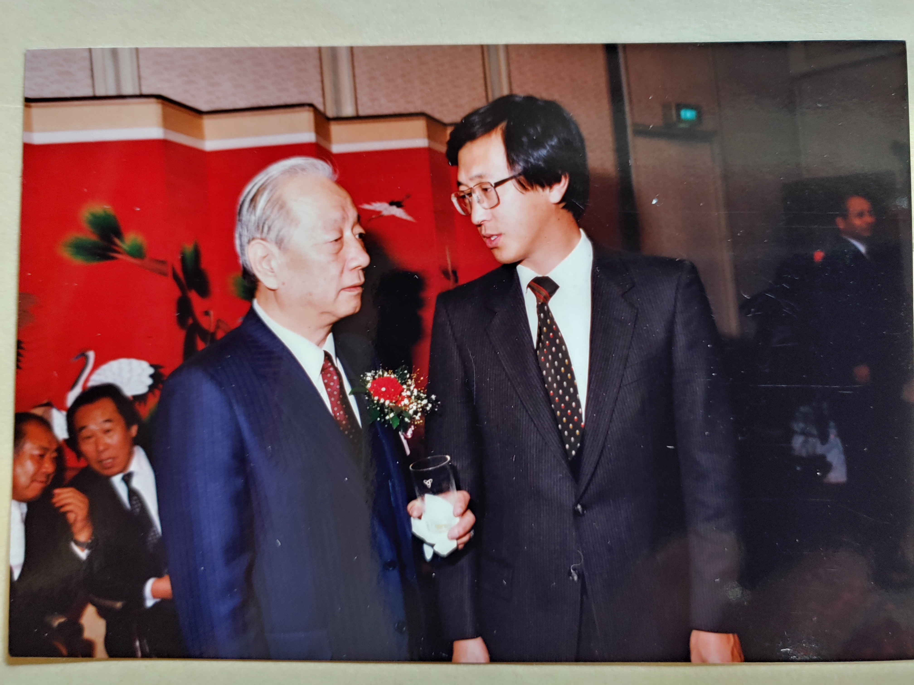
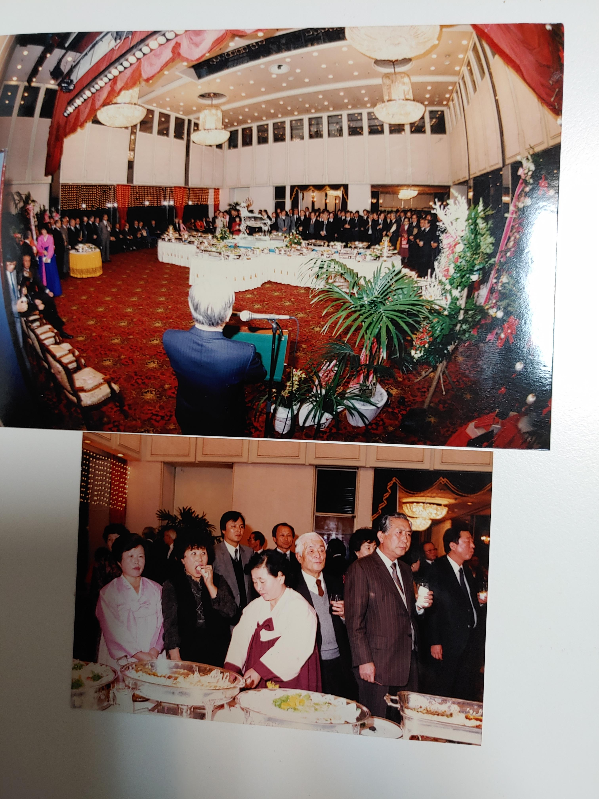

부귀를 상징하는 목단화 그림은 아버지환갑을 축하하기위하여 문하생이 그려서 헌정한 그림 - 색채와 화풍이 대담하고 비상하다.모두 세권의 창암문집과 사후에 추모사업회에서 출판한 '자연과 인간'을 포함하여 총 4권의 자전적 문집이 출간되었다..

고희연은 속창암문집 출판기념회를 겸하여 프라자호텔에서 거행되었다. 1986.12.10.

1986년 12월 고희연에서 장남과 담소. 차남은 미국 인디애너주 노틀담대학교에서 교편을 시작한 때이며 당시 영주권신청중인 관계로 고희연에 참석치 못하였다.

분옥, 경순, 선희, 종철, 조태규, 그리고 보연의 외할아버지